Put your iPhone anywhere.
AnyWhere changes the location your whole iPhone reports: teleport, drive a real route or steer with a joystick, and press Stop to get your real one back.
Simulating · Tokyo Tower35.65856, 139.74550
Free for 3 daysiOS 17 or laterNo jailbreak
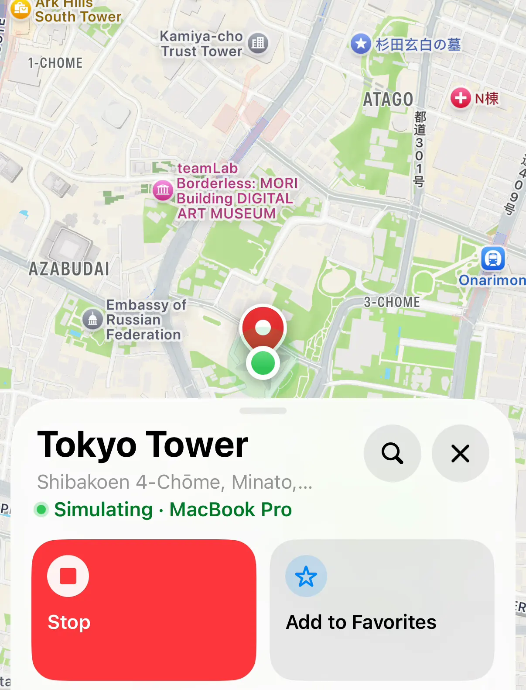
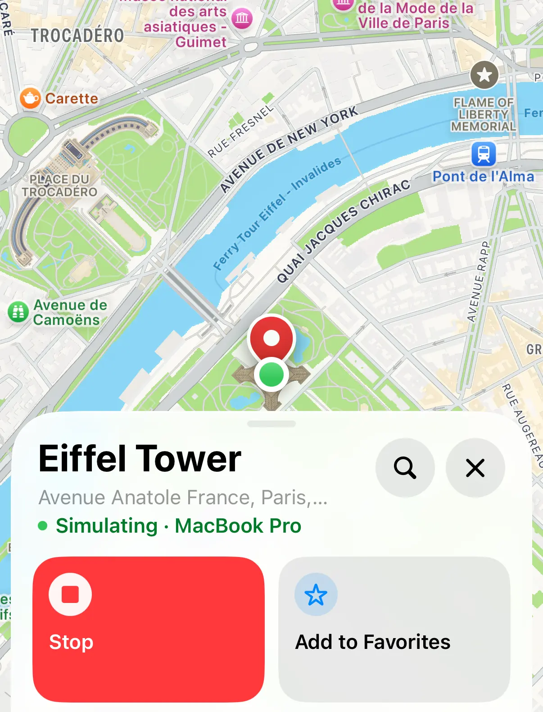
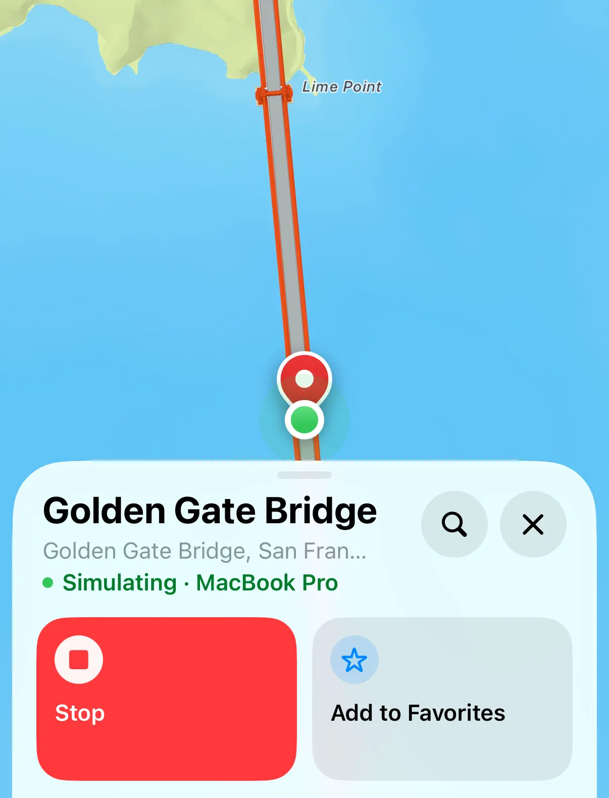
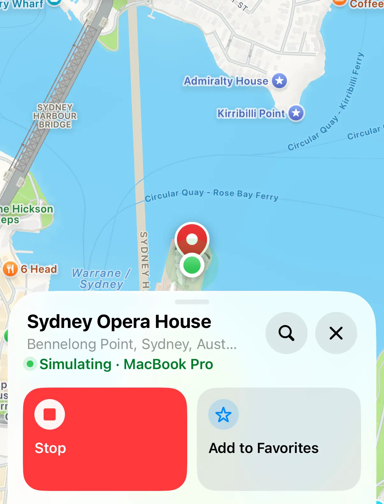
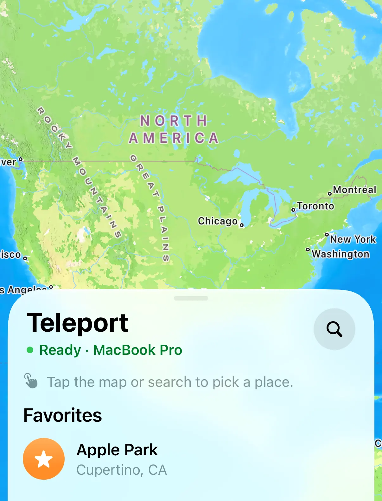
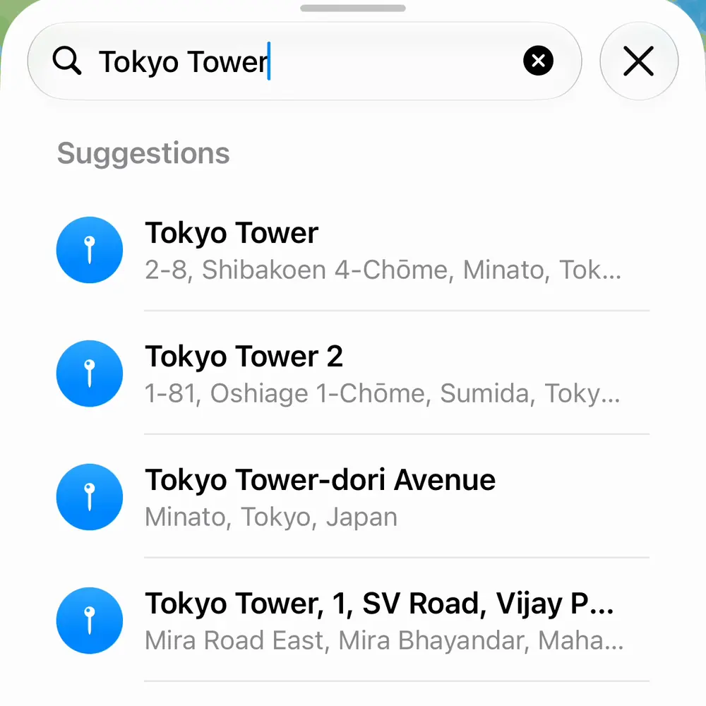
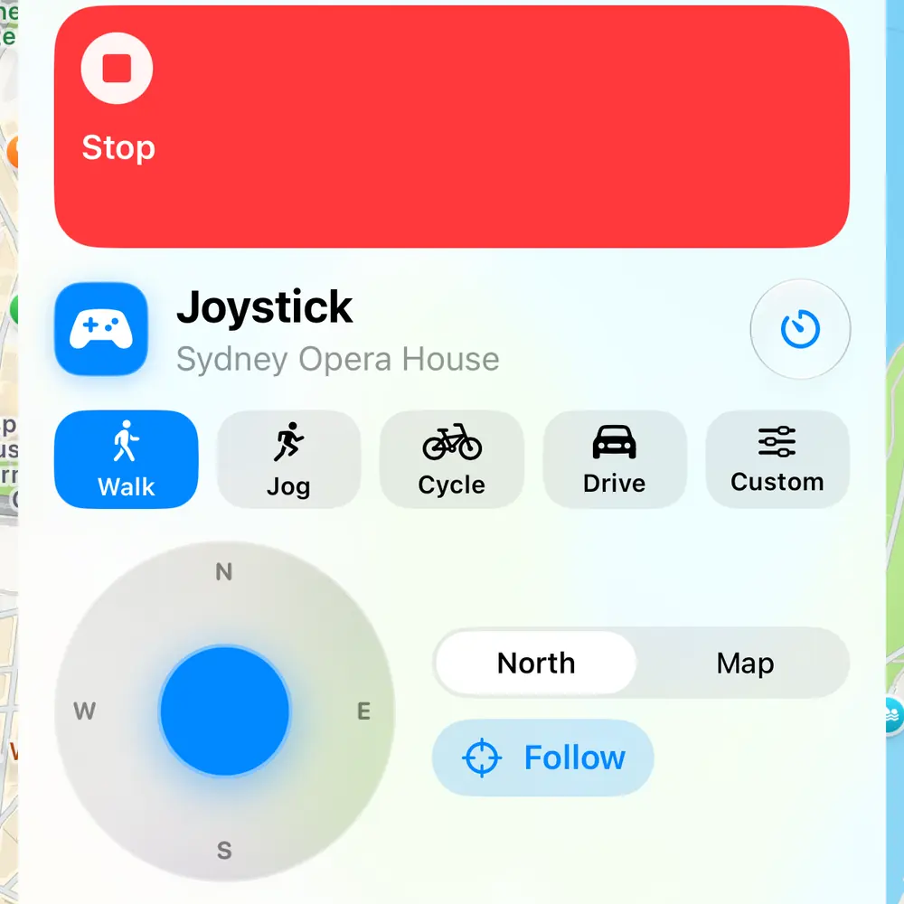
Three ways to move
Jump to any place
Search a name, an address or coordinates, or tap the map, then tap Start Here. Move Here takes it somewhere new while it runs.
Drive a real route
Add two or more stops. It follows the roads at each road's speed limit, waits at each stop as long as you set, and runs once, on a loop or back and forth.
Steer it yourself
Hold the pad and the location moves where you point: at a walk (5 km/h), a jog (11), on a bike (22) or in a car (50). Let go and it stays put until you press Stop.
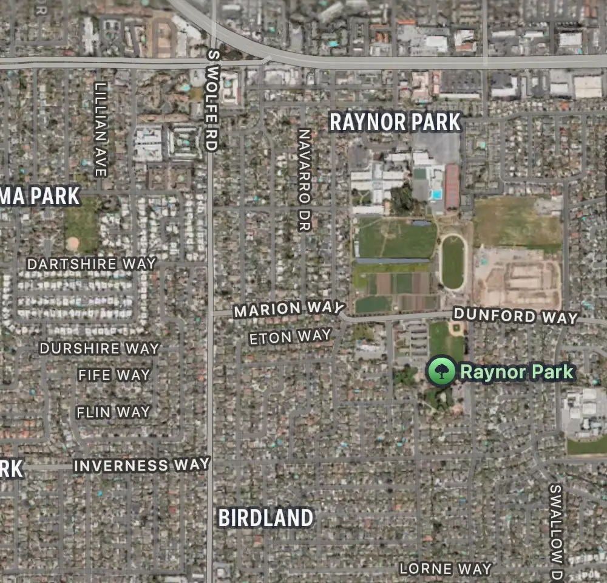
Set up once
AnyWhere installs with SideStore and a free Apple ID. After a one-time setup with your Mac, it changes the location from the iPhone alone. On iOS 27, Pair Here does it without a Mac.
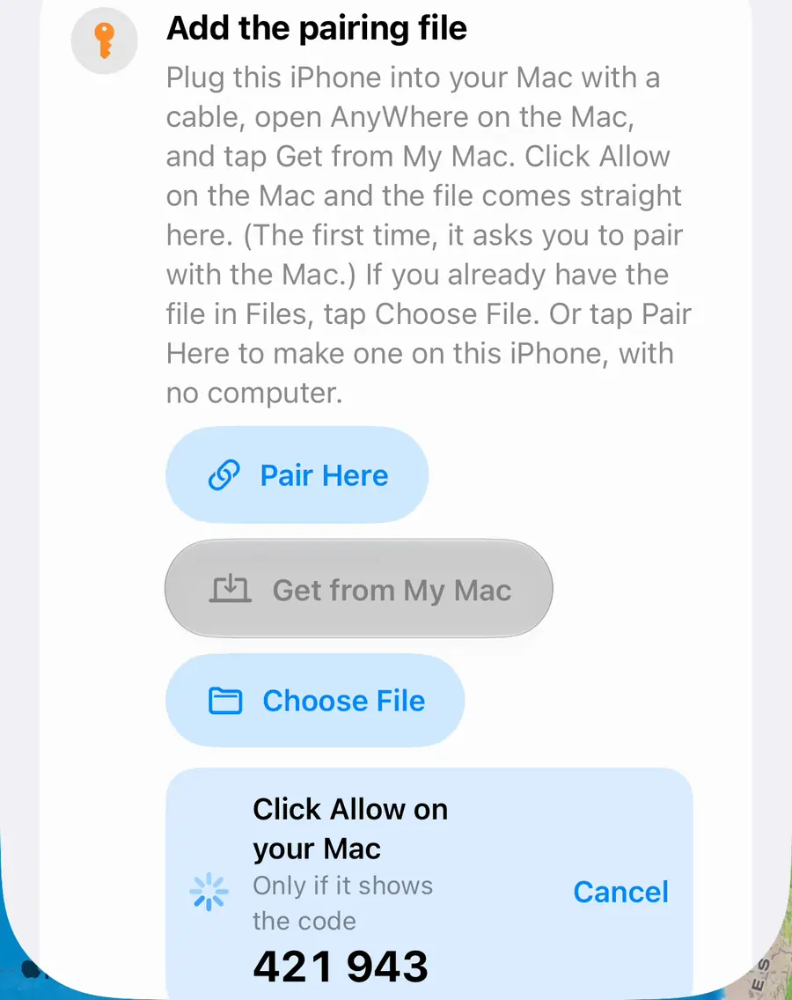
Once, with your Mac
- Install AnyWhere with SideStorefree Apple ID
- Turn on Developer Modein Settings
- Plug in and open AnyWhere on the Macfree Mac app
- Tap Get from My Mac, then Allowsame code on both
Once, on the iPhone
- Install LocalDevVPN and tap Connectfree, App Store
Every time
- Pick a place and tap Start Hereevery app sees it
- Tap Stopreal location back
From then on, no computer neededbeta
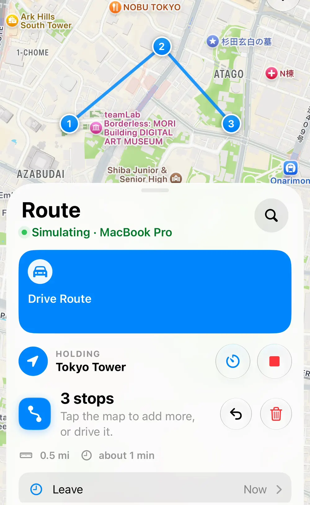
What people use it for
Building and testing apps
- Cross a geofence the way a real user wouldRoute
- Test any build: TestFlight, App Store, or someone else'sAny app
- Run the same test drive every releaseSaved routes
Screenshots and demos
- Set your app's screenshots in London or TokyoTeleport
- Show a delivery or ride map moving on cameraRoute
Your own privacy
- Choose the location apps seeTeleport
- Get your real one back with one tapStop
Every app on the iPhone sees the same place, so there's nothing to set up in each one.
Free for 3 days
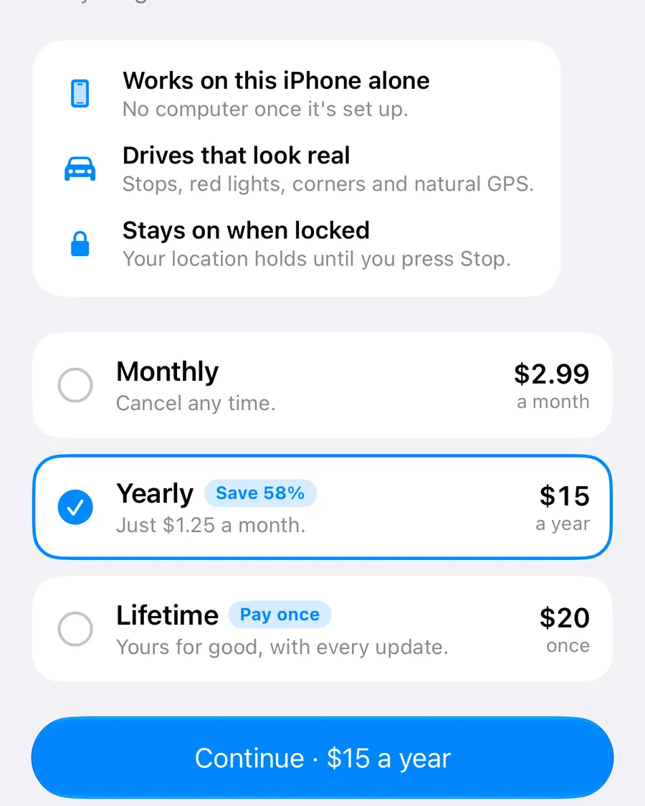
AnyWhere Pro on iPhone
A month. Cancel any time.
A year, which works out to $1.25 a month.
Once, with every update.
Free
Everything, before you pick a plan.
Teleport, routes and the joystick from your Mac, over USB or Wi‑Fi.
New versions show up in SideStore.
Prices in US dollars. Payments are handled by Stripe. Subscriptions renew until you cancel, which you can do any time from the app's Settings.
Before you install
Do I need to jailbreak? No. AnyWhere uses the location service Apple built for developers, the same one Xcode uses. Developer Mode is free and lives in the iPhone's own Settings.
Do I need a paid developer account? No. SideStore signs AnyWhere with a free Apple ID.
Does every app see the new location? Yes. It changes the location iOS itself reports, so Maps, the weather and every other app see the same place.
How do I get my real location back? Press Stop. If anything ever goes wrong, restarting the iPhone brings it back too.
What about the 7-day signing? A free Apple ID signs apps for 7 days. SideStore renews AnyWhere on the iPhone in the background, and AnyWhere reminds you a day before it runs out.
Which iPhones work? The iPhone app needs iOS 17 or later. The Mac app also works with older iPhones. Running from the iPhone alone is in beta.
Do I need a Mac? For setup, usually: the Mac makes the pairing file and sends it with Get from My Mac. On iOS 27, Pair Here makes it on the iPhone. After that, the iPhone runs it alone.
Does it work on cellular data? On Wi‑Fi, yes. On cellular alone, iOS blocks LocalDevVPN, so turn on Airplane Mode, tap Start, then turn Airplane Mode off; the location keeps going. AnyWhere shows these steps when you need them.
Is my pairing file safe? It stays in the iPhone's Keychain. Get from My Mac sends it encrypted, and only after you allow it with a matching code.
What does the free Mac app do? Everything from your Mac over USB or Wi‑Fi: teleport, routes that stop at the real traffic lights, the joystick, GPX and KML files, and a command line.
Where is the code? On GitHub, with every release and its checksums.
The latest AnyWhere.ipa, to install with SideStore or another sideloading tool. Prefer the Mac? Get the free Mac app.
Prefer Terminal on the Mac?
One line downloads the newest version, builds it and puts it in Applications.
curl -fsSL https://raw.githubusercontent.com/renyifan2009-hash/iOS-GPS-Spoofer-V1.2.3/main/install.sh | bash